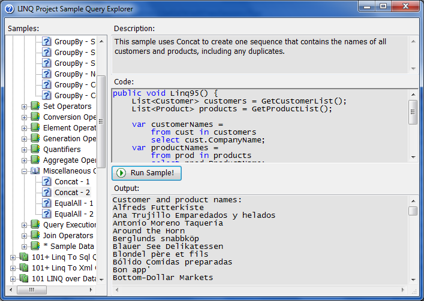

This sample contains about 101 examples from each of these areas:
LINQ To Objects LINQ To SQL LINQ to DataSet LINQ to Xml
Press F5
Run the project, and select the type of LINQ sample that you want to examine. Examine the options, and run each query that interests you. The output from the query and the source code is displayed on the interface of the application.

C#
VB
For more information, see: